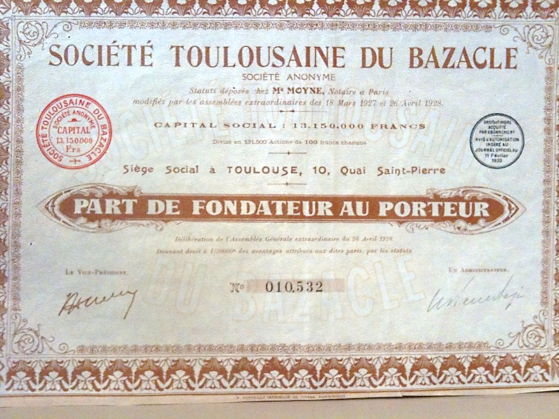
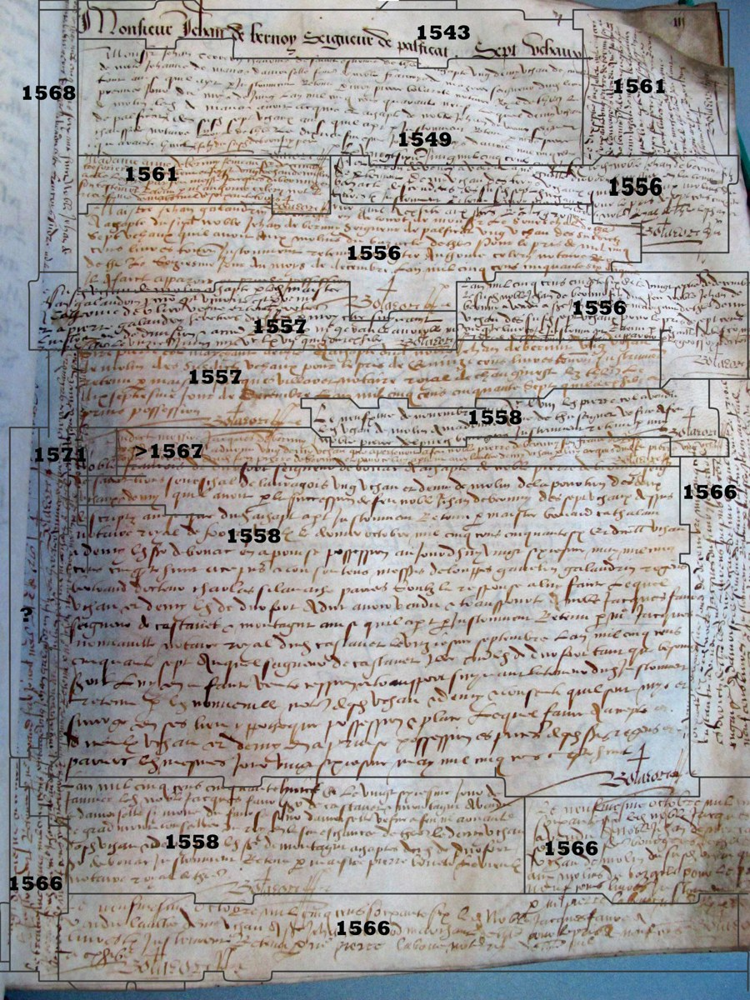
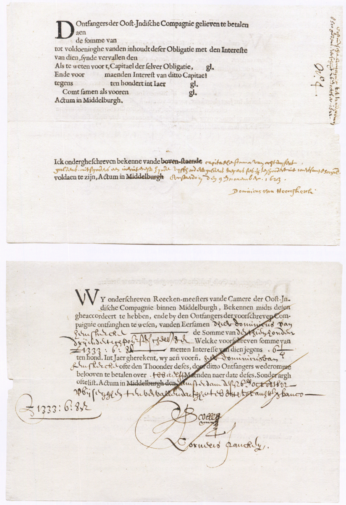
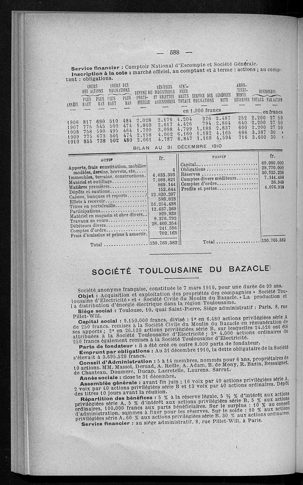
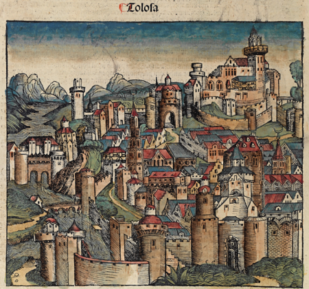
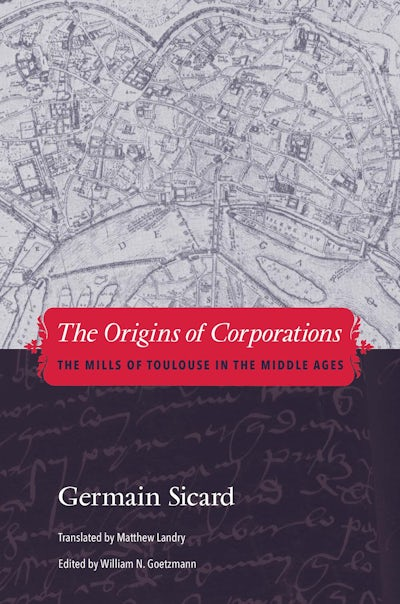

The Honor del Bazacle of Toulouse — a medieval milling company whose freely tradable shares are documented from 1372, making it one of the earliest joint-stock corporations in recorded history and the source of the world’s longest continuous series of share prices.
Along the Garonne at Toulouse, a company of grain mills known as the Bazacle divided its ownership into transferable shares — the uchaux — as early as the twelfth century. By 1372 the company kept registers of share transactions and dividend payments that survive, almost unbroken, until nationalization in 1946. The Bazacle elected directors, held shareholder assemblies, distributed profits, and saw its shares change hands at market prices for more than six hundred years.
With David le Bris (Toulouse Business School) and Sébastien Pouget (Toulouse School of Economics), I reconstructed this record from the Toulouse municipal archives. The resulting series — share prices and dividends in constant silver, 1372–1946 — lets us test the present-value relation over a horizon no modern market can offer. We find that prices track the discounted value of future dividends remarkably well across centuries of war, famine, revolution, and inflation.
The interactive chart below plots the full series; the gallery shows the documentary record behind it, and the underlying data are free to download.





The Bazacle came to modern scholarship through Germain Sicard, the great legal historian of Toulouse. His 1953 doctoral thesis, Aux origines des sociétés anonymes: les moulins de Toulouse au Moyen Âge, was the first to recognize the medieval Toulouse milling companies as genuine share corporations — with transferable stock, dividends, elected directors, and shareholder assemblies — centuries before the trading companies usually credited with inventing the form.
I had the honor of editing the English translation, The Origins of Corporations: The Mills of Toulouse in the Middle Ages (Yale University Press, 2015), and of writing its introduction. Germain and his wife were extraordinarily generous hosts and colleagues in Toulouse; in 2015 the law library of the Université Toulouse Capitole was dedicated to them both. My tribute to Germain, in French, is available here.
